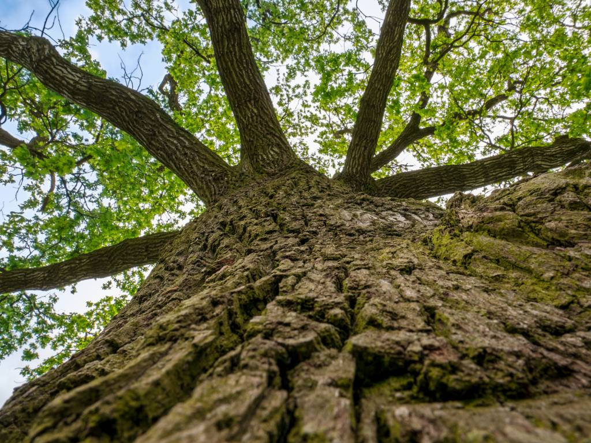

Existuje niekoľko vlastností, ktoré by mal mať dobrý stolár:
byť dobrým karikaturistom a vedieť, ako navrhovať plány
mať skvele kreatívne myslenie a vynaliezavosť
určité vedomosti v geometrii
mať dobrý pulz, keď to príde
veľmi jemná a precízna práca
vedomosti o druhoch dreva čo je na trhu
vedomosti o oprave a reštaurovanie nábytku
určité zručnosti, aby mohol vyrábať všetky druhy nábytku

Kto som
Volám sa Peter Mišík. V máji 2002 som zmaturoval na SOU nábytkárskej v Pravenci, a doteraz sa venujem práci z drevom.
Výroba:
Postupne som si prešiel výrobou z masívu (okná, dvere, stoly, komody, skrine, postele, včelie úle a iné) a drevotriesky (kuchynské linky, vstavané skrine, stoly, komody a iné).
Rezbárstvo:
Drobné bytové doplnky ale aj úžitkové predmety.
Renovácie:
Ďalej sa venujem renovovaniu drevených povrchov - podlahy, schody, dvere, nábytok...
Renovácia prebieha odbornou konzultáciou priamo na mieste, návrhy a riešenia, po dohode nastáva samotná renovácia.
Montáže:
Montáž obložkových zárubní, sem tam montáž nábytku v demonte (krabici),podbíjanie tatranským obkladom, pokladanie podláh (plávajúcej, parkety, dlážkovica, OSB-dosiek)